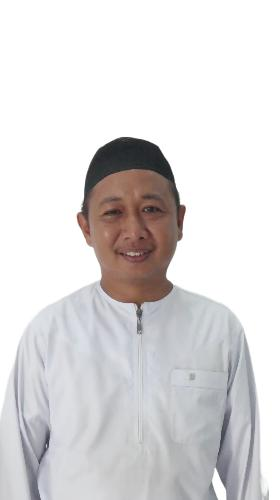

Profil PPTA Tanwirul Furqan
Menjadi lembaga pendidikan yang mencetak generasi Qur’ani, berilmu, dan berakhlak mulia.
Sejarah Singkat
PPTA Tanwirul Furqan berdiri pada tahun 2008 di bawah naungan Yayasan Pendidikan Izharil Quran. Berdirinya lembaga ini dilandasi semangat untuk mencetak generasi Qur’ani yang berilmu, beramal, dan berakhlak mulia, serta mampu menghadapi tantangan zaman dengan nilai-nilai Islam.
Visi & Misi
Visi
"Menjadi lembaga islam yang bermanfaat serta unggul melalui bidang Pendidikan, Dakwah dan Sosial bagi masyarakat."
Misi
- Pendidikan : Menyelenggarakan kegiatan pendidikan Islam yang berkualitas melalui lembaga pendidikan formal dan non formal untuk menghasilkan peserta didik yang benar aqidahnya, benar ibadahnya, benar bacaan Al-Qur'annya, berakhlak mulia, serta cerdas dan mandiri.
- Pendidikan : Menyelenggarakan kegiatan dan layanan dakwan berkualitas yang berlandaskan ahlussunnah wal jama'ah sesuai dengan Al-Qur'an dan sunnah untuk mewujudkan umat Islam benar aqidahnya, benar ibadahnya, benar bacaan Al-Qur'annya serta baik akhlaknya.
- Sosial : Menyelenggarakan berbagai kegiatan sosial dalam upaya pemberdayaan masyarakat.
Struktur Kepemimpinan
-
Ketua Dewan Pembina Yayasan
KH. Hasanuddin Badruddin
-

Ketua Yayasan
Gr. Abdurrahman
-
Pimpinan Pondok
Gr. H. Muhammad Ahsyad Arsyad
-
Kepala PAUD
Nurul Aini
-
Kepala MI
Nurul Aini
-

Kepala MTS
Muhammad Rizal
-
Kepala MTQ
Muhammad Rizal
-
-
-